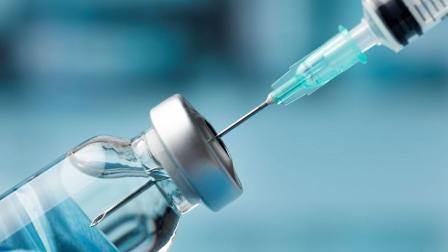

Introduction
Vaccines have been one of the most significant medical innovations in human history, saving millions of lives annually. From eradicating smallpox to nearly eliminating polio, vaccination programs have transformed global health. This article explores how vaccines work, their impact on infectious diseases, and why they remain critical for community health.
How Vaccines Work
Vaccines train the immune system to recognize and fight specific pathogens. They contain weakened or inactivated forms of viruses/bacteria, or pieces of them (like proteins), that stimulate an immune response without causing disease. This creates immunological memory, enabling the body to respond rapidly if exposed to the actual pathogen in the future.
Global Impact of Vaccination
- Smallpox Eradication: The first disease completely eradicated by human effort (1980)
- Polio Near-Elimination: Reduced by 99% since 1988 through the Global Polio Eradication Initiative
- Measles Prevention: Vaccination prevented an estimated 57 million deaths between 2000-2022
- COVID-19 Response: Rapid vaccine development saved millions during the pandemic
Herd Immunity and Community Protection
When a sufficient percentage of a population is vaccinated, herd immunity protects those who cannot be vaccinated (infants, immunocompromised individuals). This community-level protection is crucial for vulnerable populations and demonstrates the social responsibility aspect of vaccination.
Challenges and Future Directions
Despite successes, vaccine hesitancy, unequal access, and emerging pathogens pose challenges. mRNA technology, developed for COVID-19, shows promise for rapid vaccine development against future threats. Continued investment in vaccine research and equitable distribution remains essential for global health security.
Conclusion
Vaccination is not just an individual health choice but a community responsibility. As researchers and citizens, supporting vaccination programs and addressing misinformation is vital for protecting public health worldwide.